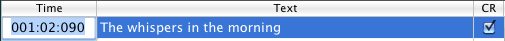

You can easily format the karaoke text font/size/color using the font panel ("Show Fonts" from the "Karaoke/Font" menu). Formatting is applied to both text and chords. Chords visibility can be toggled with the "Karaoke/Chords" menu item.
If the "Auto Size" option is checked, QMidi resizes the text accordingly to the window height so that a constant number of lines are viewed. The chords can then be independently sized by dragging the text/chord divider.
If this option is unchecked (default) lyrics are saved as plain text and lyrics are formatted "on the fly" using the current karaoke/mirror style.
If this option is checked, text is saved in rich text format ("rtf" or "rtfd"). You can format rich text in Editing mode only.
NB: When opened, styled text with the same color as background is automatically set to white/black, depending on the background color.
With the "Karaoke/Background Image" menu, you can add a background image to your karaoke window. You may also drag an image from the finder to do this.
You may also link an image to any media file:
If a karaoke file has been created on other platforms, accented characters are not displayed correctly using the standard Macintosh encoding. To fix this problem, QMidi allows you to choose the appropriate text encoding for any karaoke file and to save your settings within the playlist/library. You can change the default encoding in the Preferences dialog.
During this operation, a text file will be created with the same name of your media file plus the appropriate extension (txt, rtf, rtfd) in the media file's directory.
You should never edit synced text in "Edit" mode because this will invalidate sync information. The safe way to edit existing text is the following:

The "CR" column is used to add/remove line breaks.
The behavior of the "+" button depends on the current selection state:
QMidi does not allow direct editing of embedded MIDI/ID3 lyrics (MidiKit can do this on MIDI files).
Therefore, if you choose "Sync" from the "Karaoke" menu, a text file will be automatically created. If the "Quantize sync to lines" option is checked, QMidi will only keep sync markers pointing to lines.
If you are working on a MIDI file, you'll be able to merge the edited text later by choosing "Export Current" and checking the "Merge Text" option.
 button at bottom to enable sync mode.
button at bottom to enable sync mode.You can of course do step 4 while the player is stopped. It is not necessary to synchronize the entire text at once: you can adjust the row's position at any time by rewinding and clicking it at the right time. All these actions may be undone using the "Edit/Undo" menu.
Tip: Option-Click a row to move the playhead at the corresponding time.
Enter the synchronize mode and click the "Edit" (pencil) button to enable manual editing.

The "Time" column is formatted as measure:beat:tick for MIDI files and HH:MM:SS.hundredthsecond for any other media.